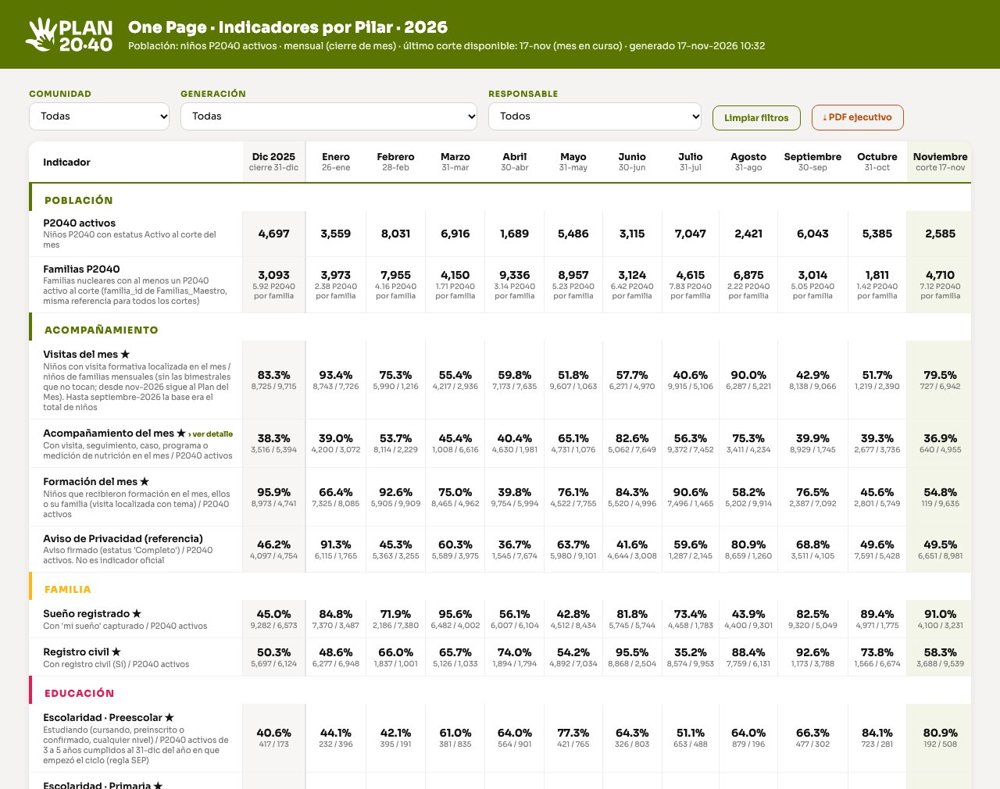
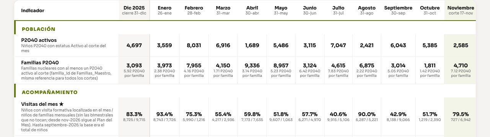

Manual del One Page · Indicadores por Pilar
Todos los indicadores del Plan en una sola hoja, mes por mes: qué mide cada renglón, de dónde salen los números y cómo leerlo.
1¿Para qué sirve?
El One Page pone todos los indicadores del Plan en una sola hoja, mes por mes, desde el cierre del año pasado hasta el mes en curso. De un vistazo ves si cada indicador sube, baja o se mantiene a lo largo del año.
Es la vista para dirección y para presentar: el Reporte Mensual explica un mes a fondo; el One Page pone todos los meses lado a lado.
2¿De dónde viene la información?
3Cómo moverte en el reporte

- El renglón bajo el título dice qué población se mide (niños P2040 activos), cuál es el último corte disponible y cuándo se generó el reporte.
- Comunidad: Todas, Cuatro Ciénegas (CC) o Independencia (CI).
- Generación: filtra a los niños de una generación (1ª, 2ª…). Cada comunidad empieza a contar distinto: en CC la 1ª generación arranca en el ciclo 15-16 y en CI en el 18-19.
- Responsable: filtra a los niños de una guía. Se usa la guía responsable que tenía cada niño al corte de cada mes.
- Limpiar filtros regresa a la vista completa y PDF ejecutivo arma una versión de una página, lista para enviar o imprimir.
- Al final hay dos desplegables: «¿Cómo se calculan los indicadores?» y «¿Cómo se calcula la Nutrición Óptima?», con las reglas completas.
4Cómo leer una celda

- El número grande es el porcentaje del indicador; debajo, en chiquito, está la cuenta: numerador / denominador (cuántos niños lo cumplen de cuántos les aplica).
- En Población no hay porcentaje: son conteos de niños P2040 activos y de familias (con los niños por familia).
- La primera columna (Dic 2025, «cierre 31-dic») es el punto de partida del año. Las siguientes son el cierre de cada mes.
- La última columna dice «corte», no «cierre»: es el mes en curso y todavía se va a mover.
- ★ marca los indicadores oficiales. Los demás son de referencia.
- «› ver detalle» (en Acompañamiento del mes y Nutrición óptima) abre la lista de niños detrás del indicador, con liga a la ficha de cada uno.
- «—» quiere decir que no hay dato: el export de visitas todavía no cubría ese mes, o con esos filtros no queda nadie en el denominador.
5Los indicadores, pilar por pilar
Qué cuenta cada renglón. El numerador es quién cumple; el denominador, a quién le aplica.
| Indicador | Cuenta a… | De… |
|---|---|---|
| Población | ||
| P2040 activos | Niños P2040 con estatus Activo al corte del mes. | |
| Familias P2040 | Familias nucleares con al menos un niño P2040 activo al corte. | |
| Acompañamiento | ||
| Visitas del mes ★ | Niños con visita formativa localizada en el mes. | Niños de familias mensuales: salen las bimestrales que no tocaban ese mes (desde noviembre de 2026 sigue al Plan del Mes). Hasta septiembre de 2026 la base era el total de niños. |
| Acompañamiento del mes ★ | Niños con visita, seguimiento, caso, programa o medición de nutrición en el mes. | P2040 activos. |
| Formación del mes ★ | Niños que recibieron formación en el mes, ellos o su familia (visita localizada con tema). | P2040 activos. |
| Aviso de privacidad | Aviso firmado (estatus «Completo»). Solo de referencia, no es indicador oficial. | P2040 activos. |
| Familia | ||
| Sueño registrado ★ | Con «Mi sueño» capturado. | P2040 activos. |
| Registro civil ★ | Con registro civil (Sí). | P2040 activos. |
| Educación | ||
| Escolaridad · Preescolar ★ | Estudiando: cursando, preinscrito o confirmado, en cualquier nivel. | P2040 activos de 3 a 5 años cumplidos al 31 de diciembre del año en que empezó el ciclo (regla SEP). |
| Escolaridad · Primaria ★ | Estudiando: cursando, preinscrito o confirmado, en cualquier nivel. | P2040 activos de 6 a 11 años, con la misma regla SEP. |
| Salud | ||
| Derechohabiencia ★ | Con seguro médico. | P2040 activos. |
| Nutrición óptima ★ | En verde según la Cartilla Nacional de Salud. | P2040 con medición vigente (de los últimos 12 meses). |
| Esquema al corriente ★ | Sin dosis pendientes que todavía se puedan aplicar, según los Lineamientos 2026. | P2040 activos. Es la misma regla del reporte «Vacunas vs Lineamientos», donde está el detalle vacuna por vacuna. |
| Espiritualidad · solo católicos | ||
| Bautismo ★ | Bautizados. | P2040 activos católicos. |
| Primera comunión ★ | Con primera comunión. | P2040 activos católicos de 7 años o más. |
| Consagración ★ | Con al menos una consagración: Sagrado Corazón o Virgen de Guadalupe. | P2040 activos católicos. |
Cómo se decide la Nutrición óptima
- Peso y talla mandan. Si el niño tiene peso y talla del mismo día, se clasifica con la Cartilla Nacional de Salud: peso y talla por edad hasta los 5 años, e IMC de los 5½ años en adelante.
- La cinta MUAC es solo de respaldo: se usa únicamente si no hay peso y talla, porque es una prueba rápida, no un diagnóstico.
- La medición vale 12 meses. Si la última tiene más de un año, el niño sale del denominador hasta que se le vuelva a medir.
- Está en verde solo si peso (o IMC) y talla están en verde. Si cualquiera cae en amarillo o rojo, queda fuera de rango.
6Preguntas frecuentes
¿Por qué la última columna se ve tan baja?
Porque es el mes en curso: muestra el último corte, no el cierre. Los indicadores del mes (Visitas, Acompañamiento y Formación) empiezan en cero cada mes y van subiendo.
¿Coincide con el Reporte Mensual?
Sí: usan las mismas reglas, así que el cierre de cada mes debe dar lo mismo. Si ves una diferencia, revisa que tengas los mismos filtros (comunidad, generación) y avísale a Análisis.
¿Por qué Visitas cambió de base a mitad del año?
Hasta septiembre de 2026 se dividía entre todos los niños. Después salen de la base las familias bimestrales que no tocaban ese mes, para no contar como pendientes a quienes no estaban programados.
¿Por qué un filtro de guía no da lo mismo que su lista actual?
Porque el filtro Responsable usa la guía que tenía cada niño al corte de cada mes. Si un niño cambió de guía, en los meses anteriores aparece con la guía de entonces.
¿Qué significa «—»?
Que no hay dato para esa celda: el export de visitas todavía no cubría ese mes, o con los filtros elegidos no queda nadie en el denominador.